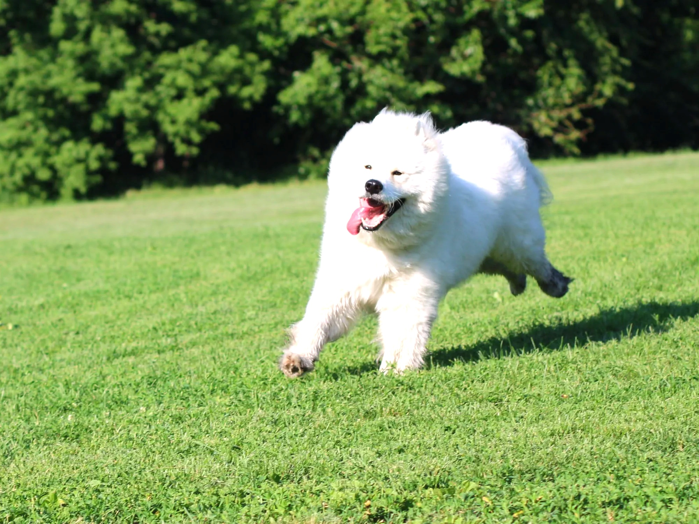

REFRACT
Photography Analysis & Enhancement

IMG_2703_CR2.jpg
Multi-LLM Analysis
80.0/100
Consensus Score
Original Review
gemini
75.0/100
The image is well-lit and captures a good moment. Cropping and sharpening enhance the subject.
- crop the image to place the dog on the left third.
- increase sharpness by 15%
- reduce highlights by 10%
openai
85.0/100
The image captures the dynamic motion of the dog well with good focus and clarity. Enhancing the brightness and vibrance will add more life to the scene, and re-cropping will emphasize the subject better.
- increase brightness by 10%
- boost vibrance in the greenery
- crop to rule of thirds with dog in left third
anthropic
Failed
Analysis failed: Error code: 400 - {'type': 'error', 'error': {'type': 'invalid_request_error', 'message': 'messages.0.content.0.image.source.base64.data: Image does not match the provided media type image/jpeg'}, 'request_id': 'req_011CWmvtJzdHLdFMrZy62GJP'}
Combined Improvements Applied:
- crop the image to place the dog on the left third.
- increase sharpness by 15%
- reduce highlights by 10%
- increase brightness by 10%
- boost vibrance in the greenery
- crop to rule of thirds with dog in left third
Before & After Comparison
Side-by-Side